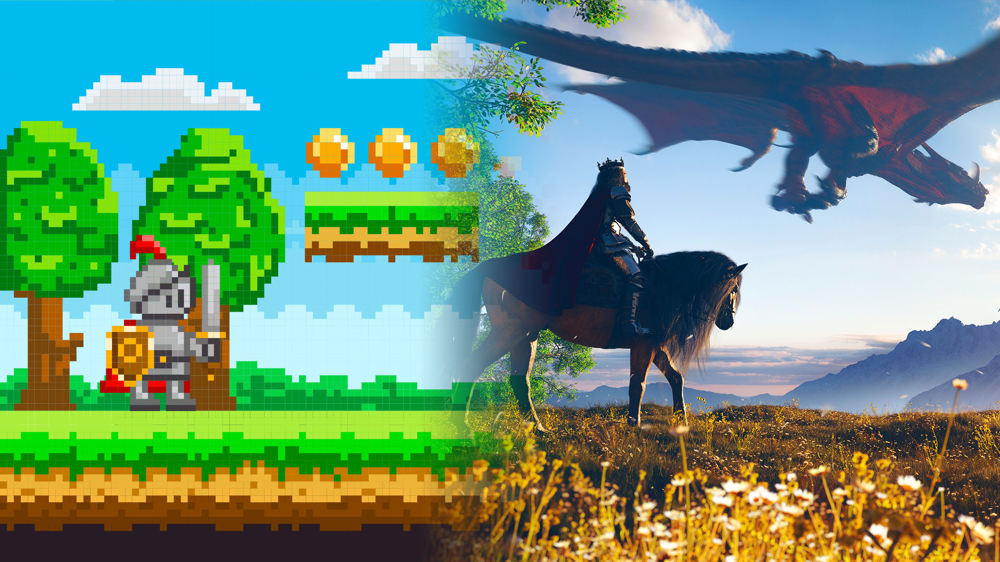

O design visual é o primeiro contato do jogador com um jogo. Ele define o estilo, a atmosfera e a identidade do produto, sendo fundamental para a imersão e a experiência do usuário.
A essencial no desenvolvimento web e também pode ser comparada ao uso de assets visuais em um jogo. Logos, ícones, arte de personagens e planos de fundo são elementos visuais que contam a história e guiam o jogador.
Em um jogo, uma imagem de alta qualidade pode transmitir emoção, criar um cenário memorável e tornar a interface mais intuitiva. Veja abaixo alguns exemplos de como imagens são usadas para reforçar a identidade de um jogo e de uma universidade:
O design não se limita apenas aos gráficos. A narrativa (como a história é contada) e a interface de usuário (UI), incluindo menus, botões e barras de vida, são elementos cruciais para a experiência de jogo. Uma boa UI é aquela que o jogador mal percebe, tornando a navegação intuitiva.
